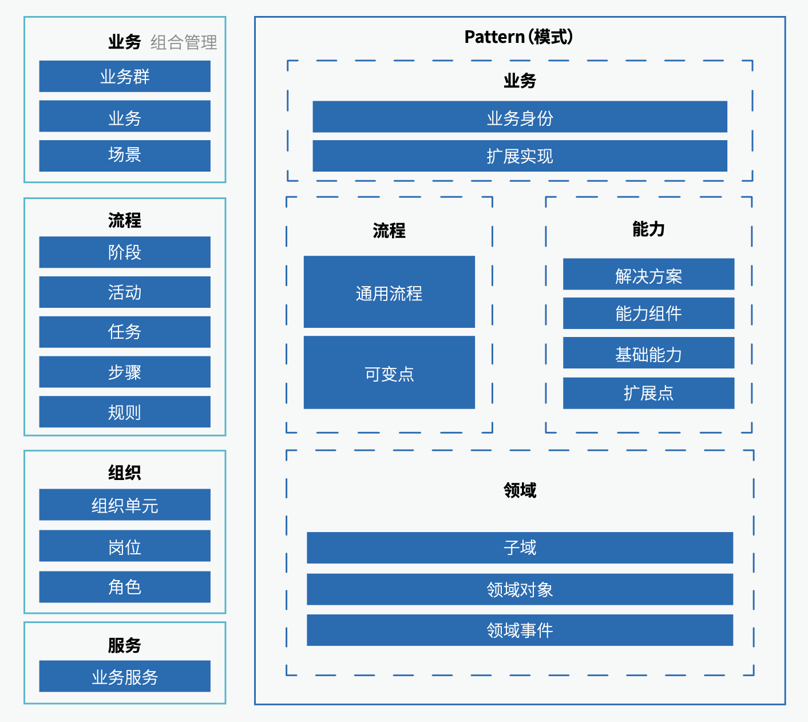

3.1 业务架构元模型 综述
业务架构 (Business Architecture) 定义了企业各类业务的运作模式及业务之间的关系结构。它以承接企业战略为出发点，以支撑实现企业战略为目标，通过对于业务能力的识别与构建，并将业务能力以业务服务的方式透出，实现对于业务流程的支撑，并最终通过组织给予保障。
业务架构是企业架构的核心内容，直接决定了企业战略的实现能力，是其他架构领域工作的前提条件和架构设计的主要依据。业务架构整体上包括“业务”、“流程”、“组织”、“服务”、“领域”和“模式”六大部分，如下图 3.1-1所示：

(图 3.1-1 企业级业务架构元模型)
其中模式部分是我们为平台型企业架构设计的核心解决方案，包括：
- Part1 流程建模
- Part2 领域建模
- Part3 业务身份建模
- Part4 能力建模
- 基础能力建模
- 扩展点与扩展实现建模
- 能力组件建模
- 解决方案建模